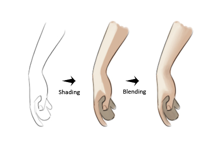
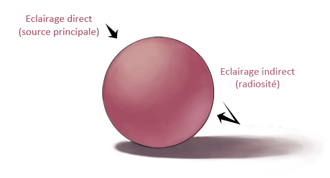
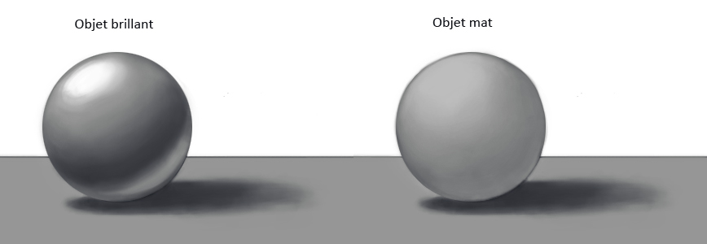
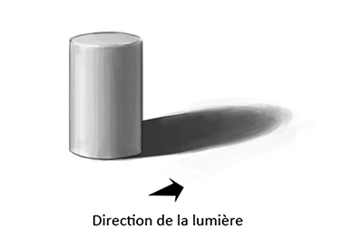
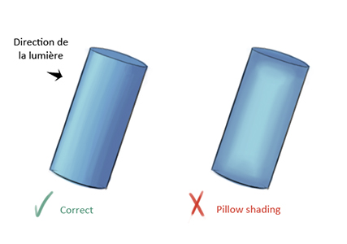
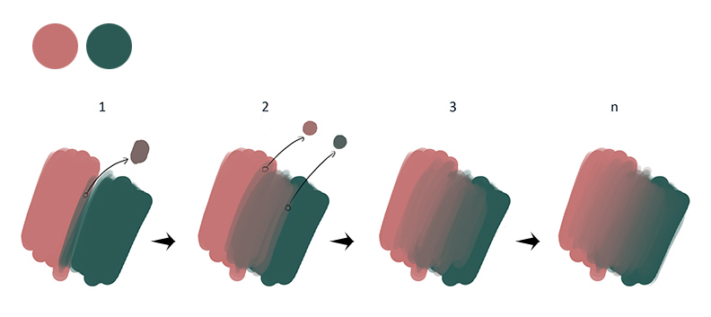
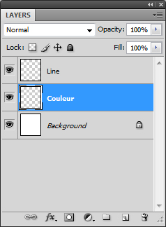
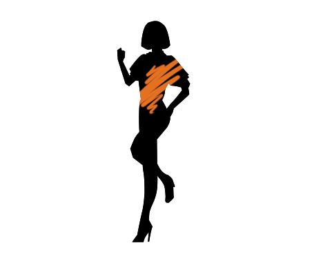

Blending et Shading

Que de noms barbares pour un simple titre d'article ! Mais sachez que derrière ce jargon improbable sa cache la base de beaucoup d'illustrations sur ordinateur. Le blending, c'est pour ainsi dire la façon de mélanger ses couleurs et le shading, celle de poser les ombres et les lumières de façon à créer le volume. Dans cet article, nous tenterons de donner une introduction très simple à la mise en couleur et à l'illustration numériques.
Quelques définitions
Tout d'abord, précisons de quoi nous allons parler.
Le shading consiste à poser les ombres et les lumières sur un objet de façon à rendre le volume et le relief de celui-ci, en tenant compte de la direction des différentes sources de lumière.
Le blending consiste à réaliser un dégradé entre deux couleurs, à les mélanger d'une certaine façon pour que la transition entre les deux ne soient pas trop brutale, si possible en reflétant la texture et le relief de l'objet.
Ça paraît tout bête et pourtant, ce sont sans doute deux des actions qu'on effectue le plus souvent lorsqu'on met en couleurs ou qu'on réalise une illustration sur ordinateur (ces principes s'appliquent aussi aux médiums traditionnels, mais d'une façon différente dont je ne traiterai pas ici). Une image sera sans doute plus parlante qu'un long discours :

Ici, j'utilise un line ou lineart, c'est-à-dire un dessin mis au propre traditionnellement (à l'encre par exemple) ou numériquement sous forme de traits bien nets. Le shading consiste à déterminer comment vont être placées les différentes zones d'ombre et de lumière sur l'objet, en fonction de la position, de la couleur et de l'intensité de la source de lumière. Des à-plats de couleur façon celluloid peuvent très bien suffire. Le blending consiste ensuite à raffiner les transitions entre les différentes zones pour donner à l'ensemble un relief plus fin.
Le shading
Maintenant, comment procéder ?
Tout d'abord, pour pouvoir poser ombres et lumières, il convient avant toute chose de choisir une ou plusieurs sources de lumière. Si vous ne savez pas où se trouve la source lumineuse, vous placerez vos ombres et vos lumières au hasard, ce qui donnera un très mauvais volume à l'ensemble. De plus, le positionnement et la couleur de la lumière conditionnent grandement l'ambiance et le « feeling » d'une illustration.
Ensuite, une fois choisie votre source lumineuse et votre palette de couleurs (je vous renvoie plutôt du côté de Fil (NDLR : Antoine Gersant) pour choisir cette dernière :] ), vous pouvez commencez à poser vos à-plats. Essayez de réfléchir physiquement à l'endroit où vient frapper la lumière et penser les différents volumes comme des reliefs simples. N'oubliez pas de traiter certains éléments : les yeux, les cheveux, les ongles sont aussi affectés par la lumière, il ne faut pas l'oublier.
Parlons maintenant de quelques phénomènes physiques particuliers liés à la lumière et qui ont une influence sur la façon dont on applique le shading.
La radiosité
La radiosité est le phénomène qui se produit quand de la lumière rebondit sur une surface pour venir en éclairer une autre. En général, cet éclairage indirect est plus faible que l'éclairage principal et on ne le voit donc apparaître que dans les zones laissées dans l'ombre par l'éclairage principal. Il donne ainsi l'impression que les ombres sont plus claires. Pour ceux qui lisent les tutoriaux de Fil sur le pixel art, c'est un cas particulier d'ambient lighting.

Regardons cette petite sphère. L'éclairage direct, en haut à gauche, laisse la partie en bas à droite de la sphère dans l'ombre. La lumière ambiante rebondit sur le support blanc et vient éclairer le bas de la sphère qui devient plus claire. La sphère reflète donc le support à la manière d'un miroir, mais beaucoup plus faiblement. Une petite remarque sur le choix des couleurs : j'ai observé qu'en général, quand il y a une radiosité « ton sur ton » comme une sphère rose sur un support rose, la couleur de l'éclairage indirect est plus saturée.
Mat ou brillant ?
Le caractère brillant ou mat d'un objet dépend de la façon dont il reflète la lumière. Pour un objet mat, la couleur la plus claire, le highlight, ne sera pas très claire et la palette sera peu contrastée. A l'inverse, un objet brillant aura un highlight très clair et une palette très contrastée. Pour les objets mats, les effets de radiosité sont faibles, alors que pour les objets brillants, ils sont très prononcés, au point d'en faire de véritables miroirs. Il est donc très utile, pour un objet brillant, de savoir dans quel environnement il se trouve, dans la mesure où il va refléter très fortement les couleurs de cet environnement. Essayez d'observer les différences entre objets mat et brillant sur l'exemple qui suit.

La diffraction
La diffraction est un phénomène dont vous avez peut-être entendu parler dans le cadre d'un cours de physique. Pour faire simple, disons que c'est le phénomène qui fait que lorsqu'on s'éloigne de la source de lumière, les limites entre ombres et lumières sont moins bien définies et deviennent plus floues. Ceci permet de suggérer le fait que l'on s'éloigne de la source de lumière, par exemple dans le cadre d'une ombre portée.

Si on observe l'ombre du cylindre sur l'image précédente, on se rend compte qu'elle se « dégrade » au fur et à mesure qu'elle s'éloigne de la source lumineuse, les « bords » de la zone d'ombre deviennent de plus en plus flous, jusqu'à ce que l'ombre disparaisse complètement. Selon la source de la lumière et la situation, ceci se fait plus ou moins vite et je vous conseille d'essayer d'observer le phénomène en vrai pour vous en rendre compte.
Les objets transparents
Le verre et les matières transparentes sont particulièrement difficiles à peindre. Pour y arriver, quelques principes peuvent être utiles. Tout d'abord, un objet transparent laisse apparaître le fond derrière lui, il n'a donc souvent pas de couleur propre — ou une légère teinte — et c'est surtout la façon dont il déforme l'environnement qui permet de le repérer. Par exemple, pour peindre un verre, on ne verra pratiquement que les bords du verre et son pied, qui renvoient des highlights et déforment fortement le fond, alors qu'il n'y a presque pas besoin de peindre le ballon (si ce n'est un léger reflet de l'environnement alentour).
Les ombres portées des objets en verre fonctionnent d'une façon un peu particulière. Leur ombre ressemble à une ombre normale, sauf qu'en raison des propriétés optiques du verre, tous les rayons qui traversent l'objet ont tendance à converger vers un même point (comme avec une loupe) qui sera très lumineux et dont la couleur sera très saturée. C'est ce qu'on appelle la caustique. Pour un verre de vin par exemple, on aura une ombre portée sombre en forme de verre et vers le bas du ballon, on verra une tache lumineuse rouge très vive et très claire. Voici un exemple.
Vous pourrez remarquer que j'ai ici essayé de mettre en pratique la caustique, les reflets lumineux sur le verre et la diffraction de l'ombre.
Le pillow shading
Il faut absolument éviter ce qu'on appelle le pillow shading. Si vous avez déjà lu les tutoriels de Fil sur le pixel art, ce nom devrait vous être familier : il s'agit de la tendance à coloriser les objets systématiquement de la même manière sans tenir compte de la lumière, en plaçant les zones claires au centre et les zones sombres sur les bords. C'est une très mauvaise chose, que ce soit en pixel art ou ailleurs, parce que cela tend à tuer tout le volume du dessin, pour deux raisons :
- L'éclairage de l'objet est incohérent puisqu'il ne tient pas compte de l'éclairage ambiant.
- Le pillow shading place les ombres en tenant compte des bords, alors que ces mêmes bords n'ont pas d'existence physique (de la même façon qu'une frontière sur une carte).
Comme toujours, c'est bien plus simple à comprendre avec une image.

N'essayez pas non plus de placer des dégradés partout : une zone plane est souvent uniformément éclairée. C'est justement souvent ce qui permet à l’œil et au cerveau de comprendre que c'est une surface plane.
Le blending
Maintenant que nous nous sommes intéressés à quelques éléments importants pour le shading, intéressons nous au blending. C'est en fait un processus de « mise au propre » de l'image. Il y a plein de façon de procéder, mais j'en présenterai une ici qui a l'avantage d'être simple, efficace et très modulable (je remercie au passage Madocks, bien qu'il semble avoir disparu des forums, de m'avoir montré cette technique). Je présenterai ici ce qu'on peut faire avec Photoshop, mais on peut faire la même chose avec n'importe quel autre logiciel de dessin digne de ce nom, seules les commandes changent, pas le principe.
Si vous avez besoin de quelques rappels sur le fonctionnement de Photoshop, je vous invite à aller jeter un œil ici.
L'idée est la suivante : vous voulez réaliser une transition entre deux zones de couleurs (par exemple, une zone d'ombre et de lumière). Pour avoir un rendu intéressant et naturel, il faut absolument éviter les outils automatisés, comme les dégradés automatiques, le doigt ou le flou. Les brosses floues sont à mon avis à éviter si vous êtes débutants.
Sélectionnez le pinceau et avec le clic droit, choisissez une brosse dure (dureté 100 % ou un peu moins, mais pas au dessous de 70 % pour commencer). Réglez le pinceau pour que l'opacité (et si possible la taille) varie avec la pression du stylet de votre tablette graphique. Si vous n'en avez pas, il faudra régler l'opacité manuellement. En maintenant Alt, il est possible de passer à la pipette. Ce raccourci est extrêmement utile pour passer de l'un à l'autre, souvenez vous en. Peignez vos deux grandes zones, sans vous soucier de la transition, mais faites en sorte qu'elles se recouvrent. A l'intersection, grâce à la transparence du pinceau gérée par Photoshop, des couleurs de transition sont apparus (ça ne fonctionne pas en tout ou rien comme avec Paint). Récupérez la couleur de transition avec la pipette (pensez à utiliser Alt !) et peignez sur la zone de transition au milieu. Vous avez maintenant trois zones de couleurs et deux transitions. Récupérez les couleurs créées au niveau des transitions avec la pipette et repeignez dessus. Il suffit d'itérer le procédé jusqu'à le rendu vous semble assez lisse.
Je sais que dit comme ça, ça peut sembler compliqué, mais c'est en fait très simple et je pense qu'il est plus facile de voir comment ça marche sur un dessin :

A chaque étape, je récupère les couleurs formées au niveau des nouvelles transitions et je m'en sers pour adoucir ces transitions. L'avantage de cette méthode est qu'elle vous permet de bien contrôler ce que vous faîtes. Si l'objet est très lisse, vous pouvez réaliser des transitions très lisses, s'il est plus anguleux, vous pouvez réaliser des transitions plus brutales. Cette méthode marche aussi avec d'autres brosses que celles de base et peut donner des textures intéressantes. On peut s'en servir bien sûr pour mélanger plus de deux couleurs mais ceci vient avec la pratique. Vous vous rendrez vite compte qu'il s'agit d'une façon de procéder naturelle et efficace.
Pour pousser les choses un petit peu plus loin, je vous recommanderai, si vous cherchez à obtenir un rendu plus « peinture » que « dessin », d'utiliser des brosses assez grandes (plus grandes que le niveau de détail auquel vous voulez travailler) et de travailler avec une opacité relativement forte avec des brosses dures (plus de 70 % d'opacité et de dureté). Mais c'est là une recommandation plus personnelle, à chacun de voir ce qui lui convient :]
Mettre un lineart en couleurs
Je vais ici présenter une façon assez simple pour commencer à mettre un lineart en couleurs. Les méthodes précédentes ne nécessitaient pas de lineart mais si vous en avez un, il peut être utile de connaître quelques astuces.
L'idée principale est de décomposer notre image en calques. Créez un calque au-dessus de l'arrière-plan, que vous pouvez nommer Couleur et un autre au-dessus, que vous pouvez nommer Line (ça semble assez explicite, non ?). Vous devriez avoir quelque chose de ce genre-ci :

Supposons que votre lineart est prêt à l'emploi. Vous l'avez scanné, nettoyé, vous l'avez peut-être redessiné sous Photoshop ou passé à l'encre et vous avez réglé les niveaux et le contraste de façon à ce qu'il soit bien propre. Vous devez avoir quelque chose qui ressemble à la main de gauche dans la première image de cet article. Maintenant, allez le chercher et copiez le dans le calque Line. S'il se trouve sur un fond blanc, ce n'est pas grave. Maintenant, passez le en mode Produit dans la fenêtre des calques. A quoi cela sert-il ? Cela va faire en sorte que lorsque vous allez peindre sur le calque Couleur, en-dessous du calque Line, la couleur va apparaître sous le line, comme si le blanc était transparent. C'est très pratique et cela évite d'avoir à enlever tout le blanc du line, ce qui laisse souvent des pixels extrêmement disgracieux. Maintenant, vous allez pouvoir passer à la couleur.
Comme vous travaillez avec un lineart, vous pouvez remplir le line avec une couleur neutre (si vous voulez celle qu'on retrouvera le plus souvent sur le dessin). Vous devriez avoir une silhouette. Sélectionnez le calque Couleur et cochez la petite icône en forme de damier en haut à gauche : votre calque est maintenant verrouillé. Cela veut dire que si vous peignez, Photoshop fera en sorte que vous ne peignez pas à l'extérieur de la silhouette, même si vous ne faîtes pas attention à ne pas dépasser. Une image, encore une fois, est plus parlante qu'un gros pavé de texte :

Ceci vous permettra de séparer différentes zones de l'image si vous en avez besoin. Par exemple, vous pouvez créer un calque pour chaque personnage de la scène, peindre la silhouette de chaque personnage et la verrouiller de façon à travailler aussi proprement que possible.
Pour un style lineart, vous pouvez vous contenter de cette approche, mais vous pouvez aussi vous en servir avec des dessins moins propre pour des effets de texture, de grain ou tout simplement si vous voulez juste utiliser le line comme brouillon (pour les traits de constructions, les lignes de fuite, etc.). Vous voudrez alors peut-être créer un calque au-dessus du calque Line, pour pouvoir peindre et recouvrir le tracé. Cela permet de donner un rendu plus proche de la peinture que du dessin.
Pour compléter ces quelques remarques sur la mise en couleur, je vous invite à aller voir les différents cours de pixel art de Fil sur ce site, ainsi que la leçon de dessin d'Arne qui en dit beaucoup plus long à ce sujet. J'espère que cet article vous sera utile pour vos prochaines illustrations et si vous avez des questions ou des remarques, n'hésitez surtout pas. Normalement, des making of arriveront bientôt pour essayer d'illustrer ceci de façon plus concrète :]
Ajouter un commentaire
Commentaires

La radiosité, c'est de la lumière qui rebondit sur un objet puis sur un autre avant d'atteindre l'observateur, donc c'est grosso-merdo un reflet d'un objet à la surface d'un autre (lequel n'est pas forcément hyper réfléchissant comme un miroir).
Ceci étant acquis, le reflet de la table à la surface de la boule brillante m'a l'air d'être un poil décalé par rapport à ce qu'il devrait être, non ? :)

L'idée, c'est que la lumière rebondit sur le sol éclairé, pas sur le sol dans l'ombre (mais, je crois que l'image est ambigüe malheureusement :/). Le sol dans l'ombre, il ne reçoit pas de lumière de la source principale (c'est la définition de l'ombre). Le principe à garder en tête, c'est que de toute façon, l'ombre portée est toujours plus sombre que la partie dans l'ombre de l'objet à l'origine de cette ombre portée. Ici par exemple, l'ombre portée par la balle est plus sombre que la face "droite" de la boule.

Excellent article, comme d'habitude, mais j'ai du mal à saisir le coup de la radiosité: si la lumière rebondit à l'arrière de l'objet afin de l'éclairer un peu, l'ombre ne devrait pas être un peu éclairée aussi ? Ou alors c'est que je pense en 2D et non en 3D ?